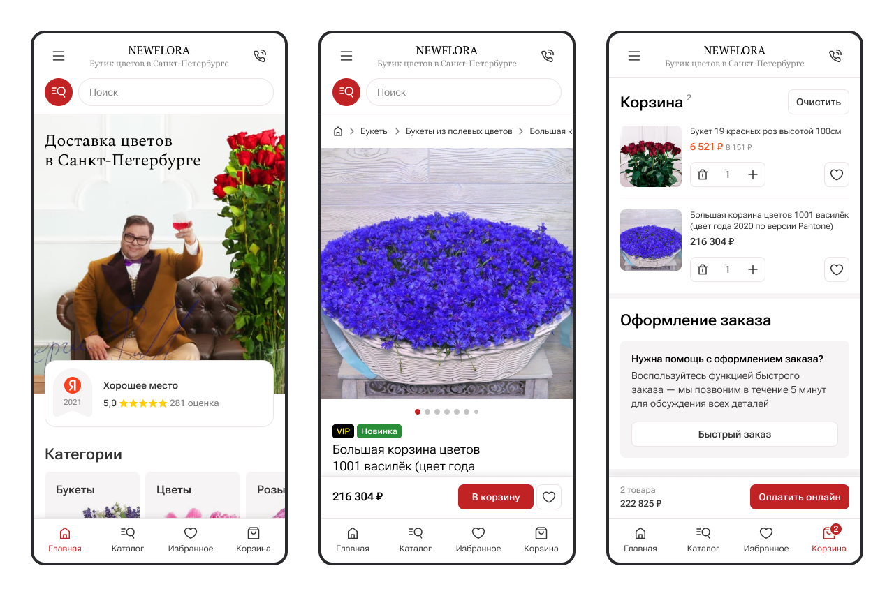
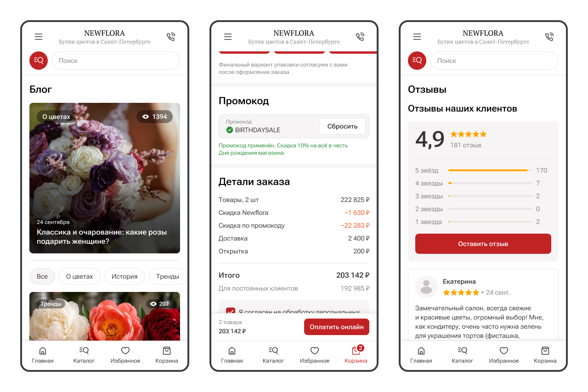

Newflora
Интернет-магазин цветочного бутика в Санкт-Петербурге. Основная задача сервиса — помочь пользователю быстро подобрать букет и оформить заказ с доставкой или самовывозом.
Период работы
С 2022 по 2025 год.
Роль
UX/UI-дизайнер в составе дизайн-команды студии.
Зона ответственности
Проведение UX-аудита, проектирование пользовательских интерфейсов, полный редизайн сайта, развитие существующего функционала, подготовка макетов к разработке и сопровождение внедрения.
Коммуникация
Работал совместно с арт-директором студии, который взаимодействовал с заказчиком. Участвовал в обсуждении решений, подготовке макетов и согласовании интерфейсов перед передачей в разработку.
I. Провёл UX-аудит интернет-магазина
Заказчик обратился с задачей выяснить, почему около 80% пользователей не завершают оформление заказа. Несмотря на то что основной акцент был сделан на сценарий покупки, аудит охватывал весь сайт, чтобы выявить системные проблемы и определить точки роста.

Что сделал
- Провёл комплексный анализ пользовательских сценариев сайта с акцентом на процесс оформления заказа.
- Выявил проблемы навигации, мобильной версии, поиска и выбора товаров, а также сценария оформления заказа.
- Подготовил рекомендации по улучшению пользовательского опыта, которые стали основой полного редизайна сайта.
II. Сделал полный редизайн интернет-магазина
Через несколько месяцев после завершения аудита заказчик вернулся с запросом на полный редизайн сайта. Вместо точечных изменений было принято решение полностью обновить интерфейс, устранив выявленные проблемы и адаптировав сервис под современные требования. Основной акцент был сделан на мобильной версии, поскольку большая часть пользователей оформляла заказы со смартфонов.

Что сделал
- Полностью переработал структуру и пользовательские сценарии сайта, уделив особое внимание удобству оформления заказа на мобильных устройствах.
- Обновил визуальный стиль сервиса, сделав интерфейс более современным, лёгким и соответствующим эстетике цветочного бренда.
- Разработал UI-кит с описанием компонентов для последующего переиспользования и самостоятельного развития интерфейса командой разработки.
III. Продолжил развитие интернет-магазина после редизайна
После запуска обновлённой версии сайта заказчик продолжил развивать продукт и регулярно обращался с задачами по улучшению пользовательского опыта и расширению функциональности сайта. В течение следующих полутора лет сайт постепенно дополнялся новыми возможностями, направленными на повышение удобства оформления заказов, улучшение поисковой оптимизации и увеличение конверсии.

Что сделал
- Переработал страницу каталога: улучшил карточку товара, добавил подразделы, тематические подборки и блок с популярными вопросами для и улучшения SEO.
- Расширил сценарий оформления заказа: добавил выбор типа курьера, возможность создания открытки с индивидуальным дизайном и поддержку промокодов.
- Разработал раздел блога с возможностью встраивания товарных подборок в статьи для поддержки SEO и повышения конверсии.
- Спроектировал страницу отзывов о бутике с интеграцией отзывов из Яндекса и Google.
Выводы
Работа над Newflora показала, что последовательное развитие продукта может быть не менее ценным, чем его создание с нуля. Проект начался с UX-аудита, а затем перерос в долгосрочное сотрудничество, в рамках которого сайт регулярно развивался и дополнялся новым функционалом.